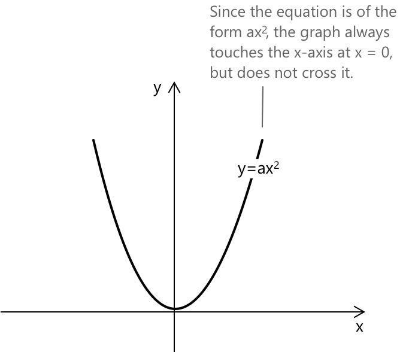

Неповні квадратні рівняння
Що таке незаповнені квадратні рівняння
Квадратне рівняння вважається незаповненим, якщо в ньому відсутній один із членів стандартної форми \(ax² + bx + c = 0\), за умови, що член \(x^2\) присутній. Ці рівняння легко розв'язати, і немає потреби використовувати формулу квадратного рівняння або метод розкладання на множники для знаходження їхніх коренів.
Якщо \(b\), коефіцієнт лінійного члена \(x\), та стала \(c\) дорівнюють нулю, ми маємо: \[ax^2 = 0 \quad a \neq 0 \] У цьому випадку рівняння має одне дійсне розв'язання \(x = 0 \quad \forall a \neq 0\).

Графічно рівняння представляє параболу з вершиною в початку координат \((0, 0)\). Вона торкається осі x, але не перетинає її. Графік відкривається вгору, якщо \( a > 0 \), і вниз, якщо \( a < 0 \). Значення \(a\) також визначає, наскільки широкою або вузькою виглядає парабола.
Хоча рівняння має лише одне розв'язання, воно залишається квадратним рівнянням: функція має подвійний корінь у нулі, що означає, що вісь x є дотичною до параболи в початку координат.
Якщо \(b\), коефіцієнт лінійного члена \(x\), дорівнює нулю, ми маємо: \[ax^2 + c = 0 \quad a \neq 0, c \neq 0 \]
У цьому випадку розв'язання таке: \[ x^2 = -\frac{c}{a} \]
У цьому випадку рівняння представляє параболу без лінійного члена, що означає, що вона симетрична відносно осі y. Якщо \( \frac{c}{a} < 0 \), графік перетинає вісь x у двох симетричних точках. Якщо \( \frac{c}{a} > 0 \), дійсних розв'язань немає і парабола не торкається осі x.
Якщо \(a \), коефіцієнт квадратичного члена \(x^2\), та стала \(c\) мають різні знаки, рівняння має два різні дійсні розв'язання:
\[x_{1,2} = \pm \sqrt{-\frac{c}{a}} \]
Це означає, що парабола симетрична відносно осі y і перетинає вісь x у двох різних точках. Ці точки симетричні відносно початку координат.
Якщо \(a \), коефіцієнт квадратичного члена \(x^2\), та стала \(c\) мають однаковий знак, значення під коренем є від'ємним. У цьому випадку рівняння не має дійсних розв'язань. \[-\frac{c}{a} \lt 0 \to \nexists \hspace{10px} x \in \mathbb{R} \]
Якщо стала \(c\) дорівнює нулю, ми маємо: \[ax^2 + bx = 0 \quad a \neq 0, b \neq 0 \] Виносячи спільний множник за дужки, отримаємо: \(x(ax+ b) = 0\), і застосовуючи властивість нульового добутку, отримаємо: \(x = 0 \quad (ax+ b) = 0 \) Рівняння має два різні дійсні розв'язання: \[x_1 = 0 \quad x_2 = -\frac{b}{a} \]
Тепер ми представимо поширену помилку, яка часто виникає при першому знайомстві з квадратними рівняннями.
Для рівнянь вигляду \( ax^2 + bx = 0\) слід уникати поширеної помилки, що виникає при спрощенні невідомого \(x\), коли рівняння, наприклад, має вигляд:
\[ax^2 = bx\]
Якщо вам бракує досвіду в розв'язуванні рівнянь, може виникнути спокуса неправильно спростити обидві частини рівняння. Це може призвести до того, що ви втратите одне або обидва розв'язання і перетворите квадратне рівняння на лінійне. Тому важливо повністю розуміти рівняння та уникати будь-яких поспішних спрощень.